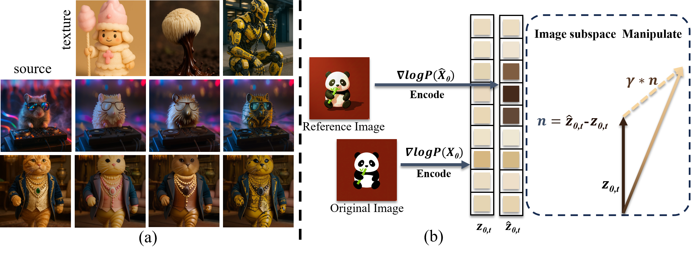
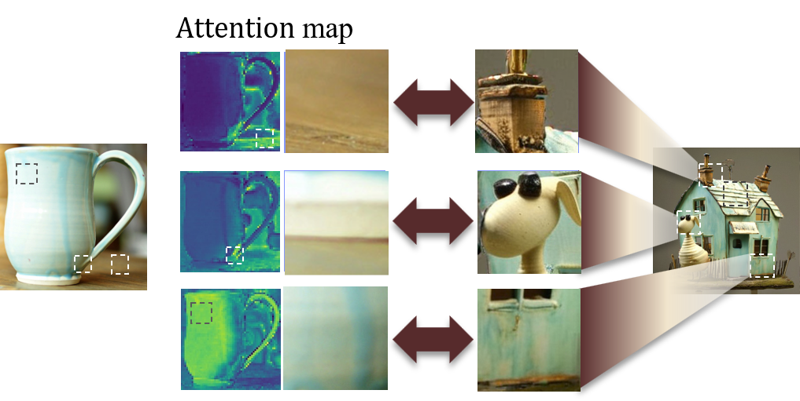
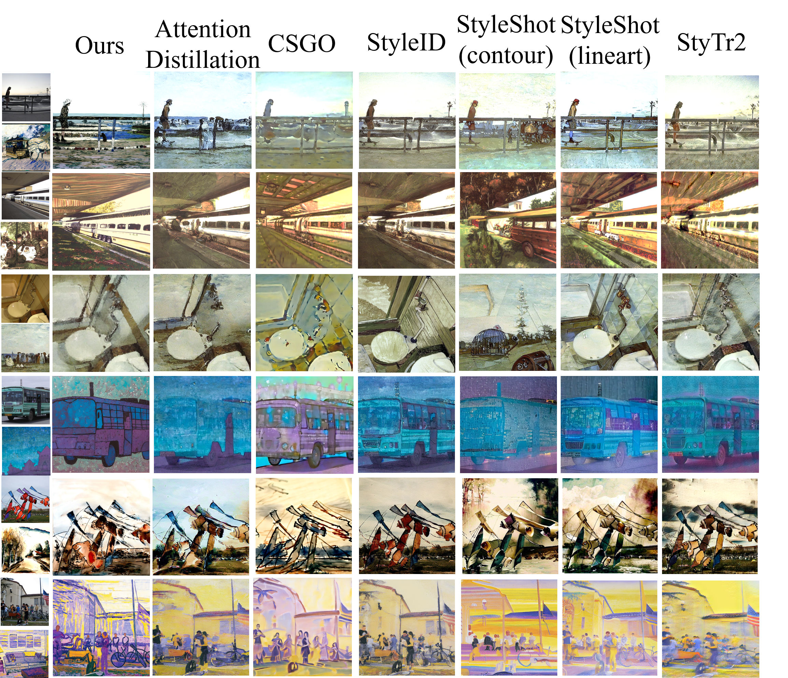
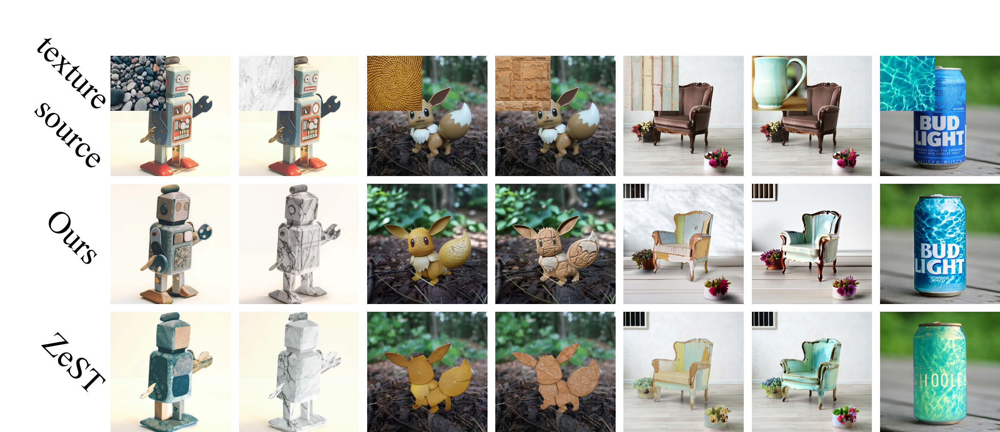
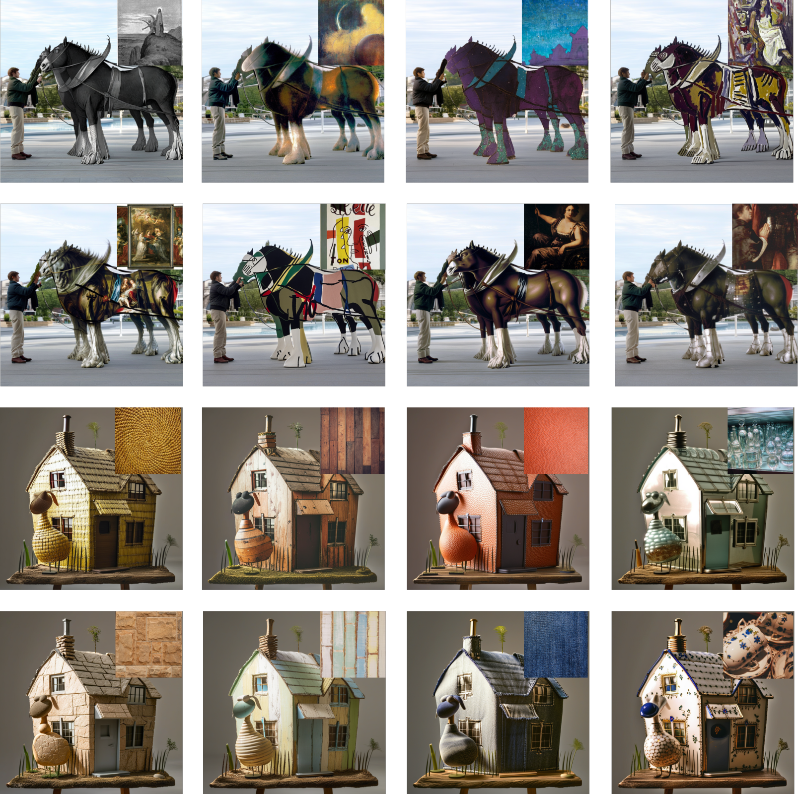
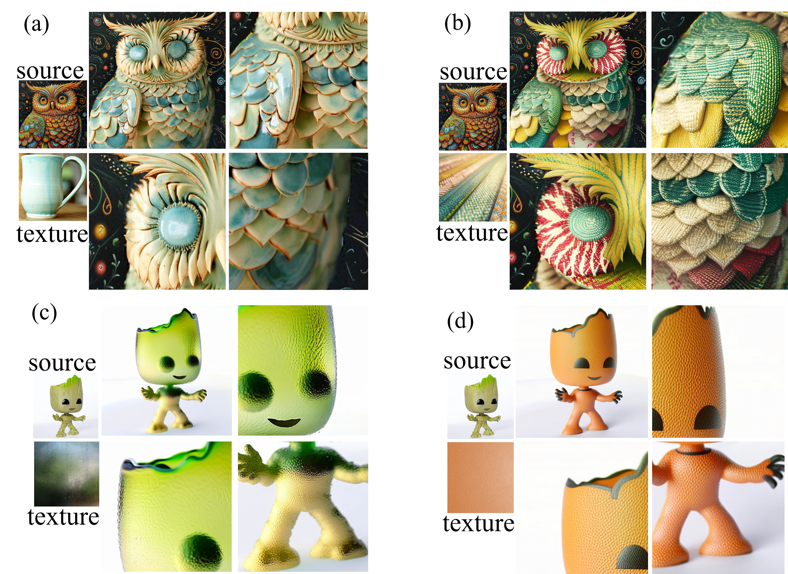
A fundamental challenge in controllable image generation is the conflict between concurrent guidance signals: structural conditioning and style conditioning compete for the same attention queries within the diffusion model's latent space, producing object distortions, incomplete stylization, or degraded photorealism. Existing methods address style injection or structural preservation in isolation, but lack a shared contextual basis that would allow both signals to be resolved coherently.
This paper introduces Rationale, a hybrid framework that resolves this conflict through three tightly coupled components. A lightweight, trainable Resampler, trained on our newly curated style-balanced Subject-Materials-Style-Set (SMSS) dataset, encodes a reference image into structure-aligned style tokens. Relative Self-Attention Guidance (RSAG) steers self-attention queries toward a pre-computed structural prior via a distributional shift formulation with a provable \(O(\sqrt{T})\) sublinear regret bound. Style-Aligned Sparse Attention decouples content and style at the query level using AdaIN normalization and deterministic Top-1 matching, preventing semantic bleed while preserving object geometry. Extensive evaluations demonstrate that Rationale achieves the best content preservation among compared methods (lowest LPIPS and ArtFID) while maintaining competitive style fidelity, and is consistently preferred by human evaluators.
Synergizes a lightweight trainable Resampler with two fully parameter-free, inference-time attention modules. Resolves guidance conflicts without test-time optimization and without sacrificing control granularity.
Relative Self-Attention Guidance actively corrects structural distortions by steering generation queries toward a cached structural prior, formulated as a distributional shift with a provable \(O(\sqrt{T})\) regret bound.
Style-Aligned Sparse Attention decouples content and style at the query level via AdaIN normalization and deterministic Top-1 matching. Prevents semantic bleed across object regions while preserving object geometry.
60K-image style-balanced dataset across 78 categories, addressing the photorealistic-image bias in prior training data. Enables generalized Resampler training. Dataset and code will be publicly released.
Rationale runs on a frozen SDXL backbone and introduces two inference-time modules. The Resampler (trainable) encodes the style reference into structure-aligned tokens. RSAG and Style-Aligned Sparse Attention (both parameter-free) jointly resolve attention conflicts at each U-Net block.
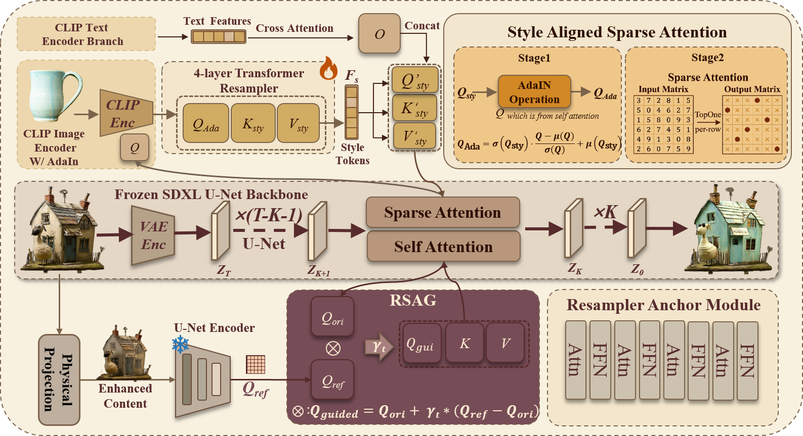
Rationale framework. (A) Style-Aligned Sparse Attention — the style image is encoded by the frozen CLIP encoder into patch-level keys/values and a global query. The spatial query \(Q_\text{ori}\) from the U-Net is modulated via AdaIN and fed into the trainable Resampler to produce structure-aligned style tokens, injected via Top-1 sparse attention. (B) RSAG — the content image passes through the Physical Projection module to produce enhanced structural priors; self-attention queries are cached from a frozen U-Net forward pass, then used at each step to steer the main denoising via \(Q_\text{guided} = Q_\text{ori} + \gamma_t(Q_\text{ref} - Q_\text{ori})\).
Inspired by classifier-free guidance, RSAG frames structural preservation as a distributional shift in query space. The optimal shift direction is the score difference \(u^*(Q) = \nabla_Q \log P(Q_\text{ref}) - \nabla_Q \log P(Q_\text{ori})\), approximated by a first-order Taylor expansion as proportional to \((Q_\text{ref} - Q_\text{ori})\). We simplify the Hessian to a time-dependent scalar \(\gamma_t\), justified by approximately isotropic query distributions in the early high-noise stages.
Unlike prior adapters that inject style indiscriminately via keys/values, we modulate query statistics to control where attention is paid. The spatial query is first aligned to global style statistics via AdaIN, then fed into the Resampler for structure-aware token extraction.
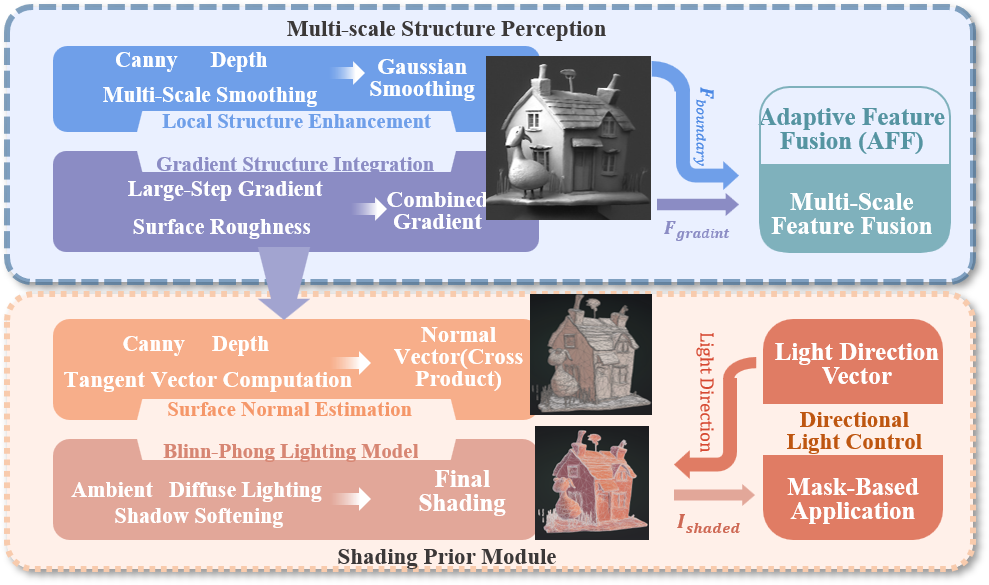
Physical Projection module. Multi-scale edge detection (Sobel + Canny), structure tensor analysis, and pyramid-smoothed depth gradients are fused to produce an enhanced structural prior. Surface normals estimated from smoothed depth, combined with a parameterized light direction, enable Lambertian shading simulation — providing realistic lighting control without explicit 3D modeling.
Evaluated against CSGO, StyleShot, StyTr2, StyleID, and Attention Distillation for style transfer; ZeST for material transfer. User study: 187 participants, 5-point Likert scale, 5,000+ ratings, p < 0.05 (Wilcoxon signed-rank test).
| Method | ArtFID ↓ | FID ↓ | LPIPS ↓ | LPIPSgray ↓ | User Pref. ↑ |
|---|---|---|---|---|---|
| CSGO | 36.930 | 21.207 | 0.663 | 0.539 | 4.0 |
| StyleShot (contour) | 36.426 | 19.580 | 0.770 | 0.683 | 3.2 |
| StyleShot (lineart) | 35.488 | 20.639 | 0.640 | 0.529 | 3.9 |
| StyTr2 | 30.708 | 18.889 | 0.544 | 0.449 | 4.1 |
| StyleID | 28.778 | 18.122 | 0.505 | 0.439 | 4.3 |
| Attn. Distillation | 28.977 | 17.504 | 0.566 | 0.470 | 3.8 |
| Rationale (Ours) | 25.029 | 16.877 | 0.483 | 0.433 | 4.5 |
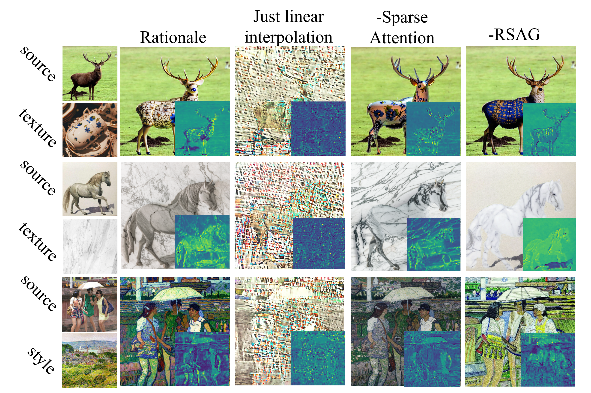
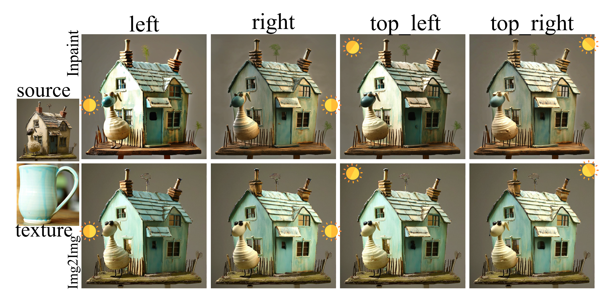
Lighting control. Varying the virtual light source direction (via the Physical Projection module's shading parameterization) produces geometrically consistent changes in highlights and shadows.
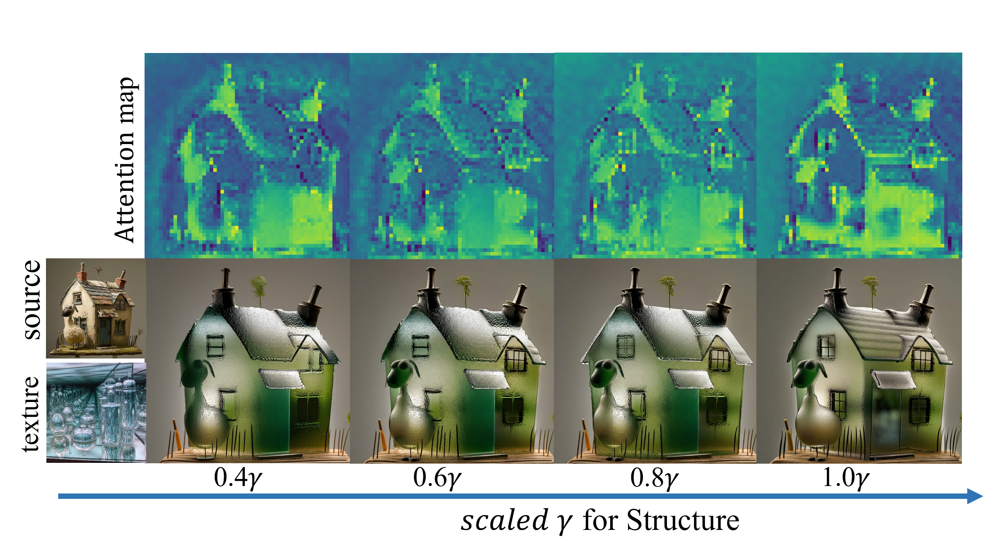
Structural intensity control. The scale parameter γ provides fine-grained control over structural enhancement prominence, validated by corresponding attention map visualizations.
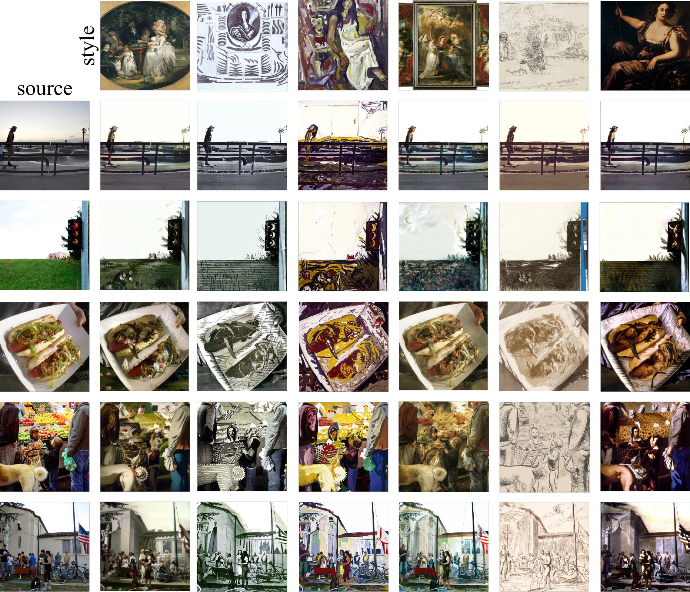
@inproceedings{chengyanli2026rationale,
title = {Rationale: Rationally Conditional Image Synthesis
with Structural Consistency and Distribution Shift},
author = {chengyanli},
booktitle = {Proceedings of the ACM International Conference on Multimedia},
year = {2026}
}